For most of human history, the biggest food problem was not self-control. It was access.
Humans evolved in a world where food was uncertain, calories were hard to get, and survival often depended on taking advantage of food whenever it was available. If you found something calorie-dense, your body wanted you to eat it. That was not a flaw. That was the system working exactly as designed.
The problem is that the world changed much faster than our biology did.
Today, especially in wealthy countries, food is everywhere. Calories are cheap. Portions are large. Snacks are always within reach. Highly processed foods are engineered to taste incredible, go down easily, and make you want more. For the first time in human history, the average person can meet their daily calorie needs with almost no effort.
But our bodies are still running on old survival software.
Your body does not naturally care about having visible abs, an optimal body-fat percentage, or a perfectly balanced physique. It cares about survival. And from a survival perspective, eating more when food is available makes sense. Extra body fat was once protection against famine, illness, winter, or failed hunts. In a scarce environment, the people who were strongly motivated to eat calorie-dense foods had an advantage.
That same instinct is now working against us.
We did not suddenly become lazy, weak, or morally worse than previous generations. We became humans with ancient appetites living in a modern food environment that never turns off. The signal that once helped us survive — “eat when food is available” — now exists in a world where food is always available.
That is why obesity became so common.
It is not because everyone forgot how to be disciplined. It is because biology and environment collided. Our hunger, cravings, reward systems, and preference for calorie-dense foods were shaped by scarcity. Modern food companies, restaurants, delivery apps, convenience stores, and grocery aisles now give those instincts unlimited opportunities.
This does not mean personal responsibility does not matter. It does. But it means the modern body-composition struggle is not random, and it is not mysterious.
We are not fighting nature because we are broken.
We are fighting nature because nature prepared us for a world where food was rare, and now we live in a world where food is cheap, delicious, and everywhere.
Cardio Burns Calories. Lifting Burns Calories and Builds Your Engine.
Why resistance training belongs in your fat-loss plan from the beginning
When most people decide they want to lose fat, their first thought is usually cardio.
They think about running, biking, walking on the treadmill, using the elliptical, or doing some type of high-intensity workout. And to be clear, cardio can absolutely help with fat loss. Cardio burns calories, improves conditioning, and can be a useful part of a good fitness plan.
But the mistake is thinking cardio is the only “fat-loss exercise.”
A lot of people put cardio and lifting weights into two completely separate categories.
They think:
Cardio is for fat loss.
Lifting is for building muscle.
But that is not the full picture.
The better way to understand it is this:
Cardio burns calories. Lifting burns calories and builds your engine.
That is the key difference.
Cardio is like spending calories. Lifting is like spending calories while also investing in muscle.
And if your goal is not just to weigh less, but to actually build your dream body, that difference matters a lot.
Lifting Weights Burns Calories Too
One of the biggest misconceptions about weight training is that it does not help with fat loss.
But lifting weights is still exercise. Your body still has to work. You still have to produce force, brace, stabilize, move weight, recover between sets, and repeat that effort over and over again.
A hard set of squats, lunges, rows, deadlifts, presses, or chin-ups absolutely requires energy. A serious lifting session can be extremely demanding.
It may not always look like cardio because you are not constantly moving the whole time, but that does not mean it is not helping you burn calories.
Lifting weights contributes to fat loss because it helps increase total energy expenditure. But the bigger benefit is what it does beyond just burning calories.
It helps you build and keep muscle.
Fat Does Not Turn Into Muscle
Another common misunderstanding is the idea that fat can “turn into muscle” or muscle can “turn into fat.”
That is not how the body works.
Fat and muscle are two different tissues.
You can lose body fat.
You can build muscle.
You can lose muscle.
You can gain body fat.
But one does not magically transform into the other.
This matters because a lot of people think they need to “lose the fat first” with cardio and then start lifting later to build muscle.
But if your end goal includes having more shape, strength, definition, and muscle tone, waiting to lift is usually a mistake.
You are delaying the exact thing that is going to help create the body you actually want.
Cardio Can Help You Lose Weight, But Lifting Helps Change Your Body
If someone only does cardio and diets, they may lose weight. That can be a good thing, especially if they have a lot of fat to lose.
But losing weight and improving body composition are not always the same thing.
Two people can both lose 20 pounds and look completely different at the end.
One person may look like a smaller version of where they started. The other person may look leaner, stronger, more athletic, and more defined.
The difference is usually muscle.
Muscle is what gives the body shape. It is what helps create the “toned” look most people say they want. And the only way to build that look is to train your muscles.
That is why lifting weights should not be treated as something you do after fat loss.
It should be part of the fat-loss plan from the beginning.
Lifting Starts the Muscle-Building Clock
Building muscle takes time.
That is another reason it is so important to start lifting early.
If you spend six months only doing cardio to lose weight, you may lose fat, but you also spent six months not building the muscle that would help create your final result.
In other words, you lost weight, but you did not start building the body underneath.
When you lift weights while losing fat, you are doing both at the same time. You are burning calories, training your muscles, improving strength, and giving your body a reason to keep or build muscle as you get leaner.
That can help you reach your goal faster because you are not treating fat loss and muscle building like two completely separate phases.
You are working on both at once.
Everyone Wants Both
Most people do not just want a lower number on the scale.
They want to look better.
They want to feel stronger.
They want clothes to fit better.
They want more confidence.
They want more shape and definition.
They want their body to look athletic, healthy, and capable.
That requires fat loss, but it also requires muscle.
Cardio can help with the fat-loss side of the equation, but lifting is what helps build the muscle side.
That is why relying only on cardio can leave people frustrated. They may lose weight, but still not look the way they expected.
The missing piece is usually resistance training.
Cardio Is Still Useful
This does not mean cardio is bad.
Cardio is great for your heart, conditioning, endurance, health, and additional calorie burn. Walking, biking, running, sports, and other forms of cardio can all have a place.
The point is not that cardio is useless.
The point is that cardio should not replace lifting if your goal is to build your best body.
A smart fat-loss plan can include both.
But if you had to choose the foundation, lifting weights should be near the top of the list because it does something cardio does not do nearly as well:
It builds muscle.
The Better Fat-Loss Mindset
Instead of thinking, “I need to do cardio to lose fat, then I will lift later,” think:
“I am going to lift now so I can burn calories, build muscle, and improve my body composition at the same time.”
That mindset changes everything.
You stop seeing lifting as optional. You stop thinking fat loss is only about sweating more. You stop chasing only the number on the scale.
Instead, you start training for the body you actually want.
Because cardio burns calories.
But lifting burns calories and builds your engine.
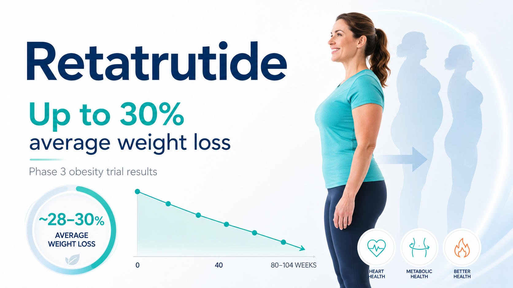
Are Weight Loss Drugs Cheating and Are They Worth It?
Why effective medical treatment for obesity should be viewed as care, not a shortcut
Important note: Retatrutide is an investigational weight-loss medication and is not currently FDA approved. The Phase 3 results discussed below were announced by Eli Lilly in May 2026 and have not yet been published as a full peer-reviewed paper. This article is for educational purposes only and is not medical advice. Anyone considering an approved weight-management medication should speak with a qualified medical provider.
For decades, obesity has often been discussed as though it were simply a lack of discipline: eat less, exercise more, and try harder.
But obesity is not merely a willpower problem. It is a chronic health condition influenced by appetite regulation, genetics, environment, behavior and metabolism. And for people living with obesity, remaining at a high body weight for years can carry very real health consequences.
That is why the newest generation of weight-loss medications may be so important.
What Is Retatrutide?
Retatrutide is an investigational once-weekly medication being studied for obesity treatment. Unlike medications that act only on the GLP-1 receptor, retatrutide acts on three hormone receptors involved in appetite and metabolism: GLP-1, GIP and glucagon.
In May 2026, Eli Lilly announced results from its Phase 3 TRIUMPH-1 trial. Participants taking the highest studied dose of retatrutide lost an average of 70.3 pounds, or 28.3% of their body weight, over 80 weeks.
Among participants with more severe obesity who continued into a 104-week extension, average weight loss reached 85 pounds, or 30.3% of body weight.
To put that into perspective, a person starting at 300 pounds who lost 30% of their body weight would lose approximately 90 pounds, bringing them to around 210 pounds.
That is not simply a cosmetic transformation. For many people, that could substantially change their health trajectory, mobility, quality of life and future disease risk.
It is reasonable for people to ask questions before taking a medication that may be used long term. No effective medication is entirely free of risk.
In Lilly’s Phase 3 retatrutide results, the most common side effects were gastrointestinal, including nausea, diarrhea, constipation and vomiting. At the highest dose, 11.3% of participants discontinued treatment because of adverse events, compared with 4.9% of participants taking placebo.
Approved medications in the broader GLP-1 and incretin-based category also include warnings and precautions involving serious gastrointestinal symptoms, gallbladder disease, pancreatitis, dehydration-related kidney injury and certain thyroid tumor precautions.
Those risks should be discussed with a qualified medical provider. These medications are not appropriate for everyone.
But the question should not simply be: “Does this medication have any risk?”
The more meaningful question is: “How do the risks of treatment compare with the risks of remaining obese?”
For someone living with significant obesity, doing nothing is not a risk-free alternative. Obesity is associated with higher risk of type 2 diabetes, cardiovascular disease, high blood pressure, sleep apnea, mobility limitations, several types of cancer and premature death.
We also already have evidence that this class of treatment can improve outcomes beyond the number on the scale. In 2024, the FDA approved Wegovy, a GLP-1 medication containing semaglutide, to reduce the risk of cardiovascular death, heart attack and stroke in adults with cardiovascular disease and either overweight or obesity. In the clinical trial supporting that approval, major cardiovascular events occurred in 6.5% of participants taking Wegovy compared with 8.0% taking placebo.
Taking medication for high blood pressure is not cheating. Using a statin to reduce cardiovascular risk is not cheating. Treating obesity with an effective medical tool should not be viewed differently simply because body weight is visible.
As a personal trainer, I strongly believe in resistance training, cardiovascular fitness, nutritious eating and building healthy habits. Medication does not replace the benefits of exercise. Losing weight does not automatically build strength, muscle, mobility or confidence in what your body can do.
But my ultimate goal as a trainer is not to insist that every person become healthier through one specific path. My goal is for people to become healthier.
Some people will successfully lose weight through nutrition and exercise alone. Others may benefit from medical treatment in addition to lifestyle changes. And for someone who has struggled with obesity for years, a medication that helps them lose 50, 70 or even 90 pounds may be one of the most meaningful health interventions available.
That is not laziness.
That is not failure.
And it is certainly not cheating.
It is treatment.
Day One: Exactly What to Do When You Start Lifting
A lot of people are about to say, “This is my year.” Some will start strong. Most won’t—not because they’re lazy, but because they overcomplicate everything.
This article is for the person who wants clear direction, not noise. Here’s exactly what to do on Day One of your lifting journey.
Step 1: Set a Simple 30-Day Goal
Don’t think about six months. Don’t think about your “dream body.” Just focus on 30 days.
A realistic goal for most beginners:
Lose ~10 pounds
Get a little stronger
Build the habit of showing up
That’s it. You’re not trying to be perfect—you’re trying to be consistent. Write this down somewhere you’ll see it.
Step 2: Buy the Gym Membership (Today)
Not tomorrow. Not “after the holidays.” Go to the gym and sign up.
This step matters more than people think. When money is spent, commitment follows. You’re officially in the game now.
Step 3: Do This Workout (Day One)
Your first workout should be simple, safe, and effective. You’re not trying to destroy yourself—you’re trying to show your body that training is something you do now.
Rest three minutes between sets. Use a weight you can control.
Bench Press – 4 sets of 5. Focus on smooth reps and good control.
Front Raises – 4 sets of 10. Light weight. Feel your shoulders working. Don’t use momentum; this is easy to cheat.
Tricep Pushdowns or Overhead Extensions – 4 sets of 10. Slow, controlled reps.
Bicep Curls – 4 sets of 10. Don’t swing the weight. Keep it clean.
That’s it. You should leave the gym feeling worked—not destroyed.
Step 4: Don’t Overthink Food (Yet)
For now:
Eat mostly whole foods
Get protein at each meal
Drink water
Don’t stress perfection
You can optimize later. Right now, consistency wins.
Step 5: Come Back Again
The real win isn’t this workout—it’s showing up again. Train 3–4 times per week. Repeat the process. Build momentum.
Motivation comes after action, not before it.
Final Thought
You don’t need a perfect plan. You need a starting point.
If you show up today, you’re already ahead of most people who said, “I’ll start Monday.” Start now. You’ll thank yourself in 30 days.
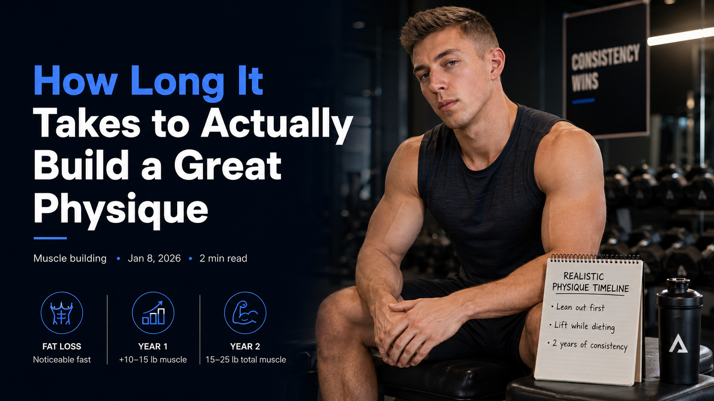
How Long It Takes to Actually Build a Great Physique
If your goal is to lose fat, you can lose fat pretty quickly. Even if you have 50lb to lose, that's totally doable in under a year! Setting ambitious goals with losing weight is definitely realistic and the results can be noticeable very very quickly. 50lb broken down into months is only 4lb a month, and some people who immediately decide to go all in and take their health seriously with 50lb to lose can drop 15lb-20lb that first month.
Building Muscle Takes Time
If your goal is to build muscle, building muscle takes a lot of time. It doesn't happen overnight. Adding 50lb of muscle takes a lifetime. But in year 1, with great training and good nutrition, adding 10lb-15lb of muscle is entirely possible. And if you're lean enough, the added muscle will show up in your physique.
Realistically, two years of great training and good nutrition with a bodyfat percentage that you're happy with is going to be enough muscle that you're turning heads and looking awesome. By this point, you could definitely expect to have added 15-25lb of muscle spread all over your body if done right. And if lean enough, you will see this!
What to Focus on First
So let's say you're like most people, you have both fat to lose and muscle to gain. What do you focus on first? I always advise the primary goal should be getting to the bodyfat percentage that you desire. Why? You feel way healthier. You look much better. When the muscle starts to come, you will see your body change, which would be very hard to notice otherwise if your bodyfat was too high.
How to Train While Leaning Out
To make this the primary goal while still building muscle, you will still lift weights, you just need to maintain a caloric deficit by just eating less calories so that weight loss is maintained. During this time, you will still be building muscle while you are losing fat. If you were to skip the weights, you would be behind in the muscle building goals you have!
Start Now—Time Will Pass Anyway
The two years that it will take to build your dream physique will pass regardless. Why not live life with the body and health you always wanted?
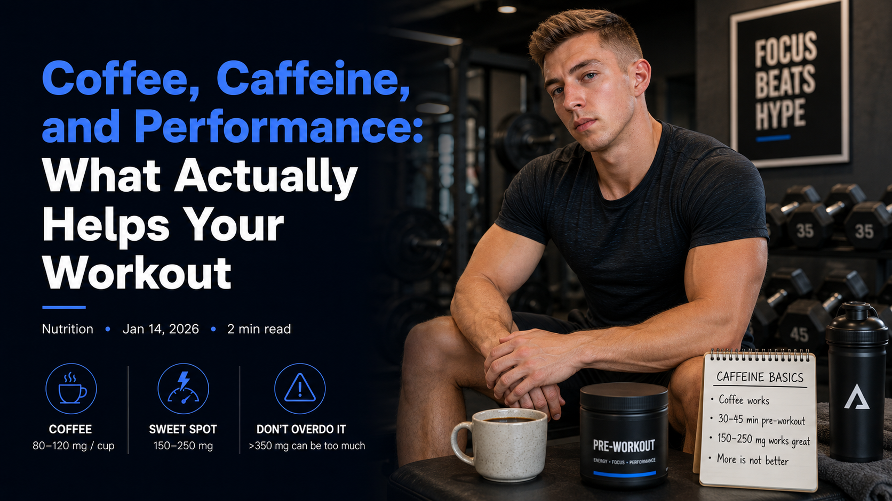
Coffee, Caffeine, and Performance: What Actually Helps Your Workout
A lot of people ask whether they should drink coffee or take a pre-workout before training. The truth is simple: caffeine works, and you don’t need anything fancy to get the benefits.
Here’s the quick breakdown.
⸻
☕ Does Coffee Help Your Workout?
Yep — it really does.
Caffeine makes you feel more alert, reduces how hard a workout feels, and helps you push a little longer and a little heavier. Most people feel it kick in about 30–45 minutes after drinking it.
One normal cup of coffee is around 80–120 mg of caffeine, which is enough for a basic boost for most beginners.
⸻
⚡ What About Pre-Workout?
Pre-workouts are basically just:
A controlled dose of caffeine
A couple extra ingredients
A good flavor
Some pre-workouts add things like citrulline (for pumps) or beta-alanine (the “tingle” feeling). These can help, but they’re not magic.
The biggest difference between coffee and pre-workout is consistency.
With pre-workout, you know exactly how much caffeine you’re getting every time.
⸻
How Much Caffeine Should I Take?
Most people feel best with 150–250 mg before training.
That’s roughly:
1–2 cups of coffee
Or 1 scoop of a normal pre-workout
You don’t need crazy high doses. More is not better. Too much caffeine can give you:
Jitters
A racing heart
Stomach issues
A crash after your workout
⸻
Are Pre-Workouts “Worth It”?
They can be… depending on the brand.
Look for:
Around 150–250 mg caffeine
No proprietary blends
Straightforward ingredients
Avoid:
Anything over 350 mg caffeine per scoop
“Extreme” or “high-stim” formulas
Labels full of ingredients you can’t pronounce
At the end of the day, if you love the pump and the ritual, pre-workout is fun and motivating. If you just want something simple and effective, coffee works great.
⸻
Beginner-Friendly Takeaway
If you’re new to lifting or just getting consistent:
You don’t need pre-workout
Coffee is perfectly solid
Caffeine is most effective when you’re actually training hard and progressively adding weight
Think of caffeine as a helpful boost — not the thing that does the work.
Consistency, sleep, and good programming matter way more.
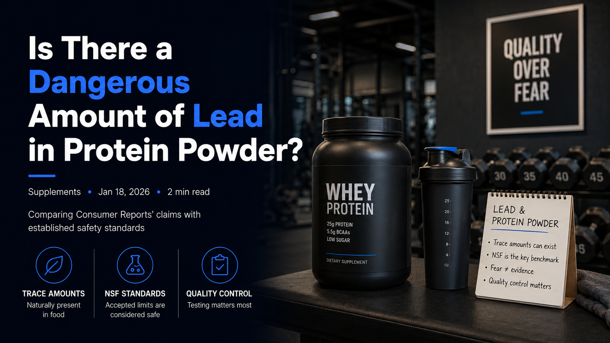
Is There a Dangerous Amount of Lead in Protein Powder?
Comparing Consumer Reports’ claims with established safety standards
A recent Consumer Reports article warned that many popular protein powders contain dangerous levels of lead. The publication set its own safety threshold for lead that is roughly 1,000 times lower than the limits established by the National Sanitation Foundation (NSF), the widely recognized certification body for dietary supplements.
Consumer Reports argues that stricter limits are necessary, but there is no evidence of meaningful health differences at the lower thresholds they promote. Meeting such restrictive levels would be costly, difficult, and arguably arbitrary when the existing NSF standards are already considered safe.
Lead is present in trace amounts throughout our food supply because it enters products through soil, irrigation water, processing equipment, and additives. Well-regulated countries work hard to minimize those contaminants, and the overall trend is positive: food today contains roughly a third of the lead it did 25 years ago. Despite that decline, researchers have not identified clear public-health improvements tied directly to these incremental reductions, largely because it is nearly impossible to isolate the effect from countless other variables.
Completely eliminating trace elements such as lead is unrealistic. Current evidence suggests that the minute quantities allowed by NSF guidelines pose no measurable risk, especially when manufacturers adhere to robust testing and quality-control procedures. While striving to lower contamination is a worthy goal, implying that products meeting NSF standards are unsafe stokes unnecessary fear.
Given the available data, NSF testing remains the most credible benchmark. Until research shows otherwise, I plan to continue consuming protein powder as usual—two servings per day—without concern that trace lead within accepted limits jeopardizes my health.
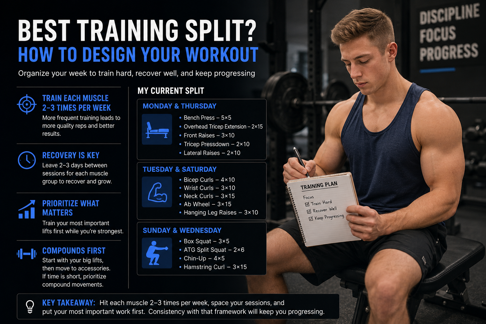
Best Training Split? How to Design Your Workout
Organize your week to train hard, recover well, and keep progressing
If your goal is to maximize strength and muscle gain, build your split around two rules: train each muscle group
two to three times per week and leave enough space between sessions to recover. Spreading the work across the
week keeps your performance high and delivers more total quality reps than packing all the volume into one
marathon day.
Here is what my current split looks like:
Monday and Thursday
Bench Press – 5×5
Overhead Tricep Extension – 2×15
Front Raises – 3×10
Tricep Pressdown – 2×10
Lateral Raises – 2×10
Tuesday and Saturday
Bicep Curls – 4×10
Wrist Curls – 3×10
Neck Curls – 3×15
Ab Wheel – 3×15
Hanging Leg Raises – 3×10
Sunday and Wednesday
Box Squat – 3×5
ATG Split Squat – 2×6
Chin-Up – 4×5
Hamstring Curl – 3×15
This layout pairs complementary muscle groups, gives each area three to five quality sets, and spaces the work a
few days apart. When time allows, training a lift twice per week outperforms doing the same total volume once.
For example, three sets of five on Monday and Thursday will beat six sets of five on Monday alone, even though
the total reps match.
Recovery windows of two to three days between sessions let you hit the next workout fresh. Bench pressing Monday and
again on Thursday leads to better results than rushing back on Tuesday or Wednesday before the muscles have
rebuilt.
The priority principle is also useful: train what matters most first, while you are strongest and most focused. If
bench press is your top priority on an upper-body day, start with it and follow up with shoulders and triceps.
If you have a weak point—say, biceps—place those movements before back work so they get your best
effort.
When in doubt, open your session with the heaviest, most demanding lifts such as the bench press, squat, or
deadlift, then move to smaller accessory movements. If you are short on time, prioritize compound lifts, because
they deliver the biggest return in the fewest sets. Even one focused set for a lagging muscle beats skipping it
entirely.
Grouping muscles that assist one another makes programming easier. Bench sessions naturally pair with shoulders and
triceps. Deadlift days combine well with hip thrusts and hamstring curls. Squat days can loop in hamstring work
again to make sure nothing is missed.
Ultimately, your training split should reflect your schedule, priorities, and recovery needs. Space your sessions,
aim to hit each muscle twice a week when possible, and put your most important work first. Consistency with that
framework will keep you progressing.
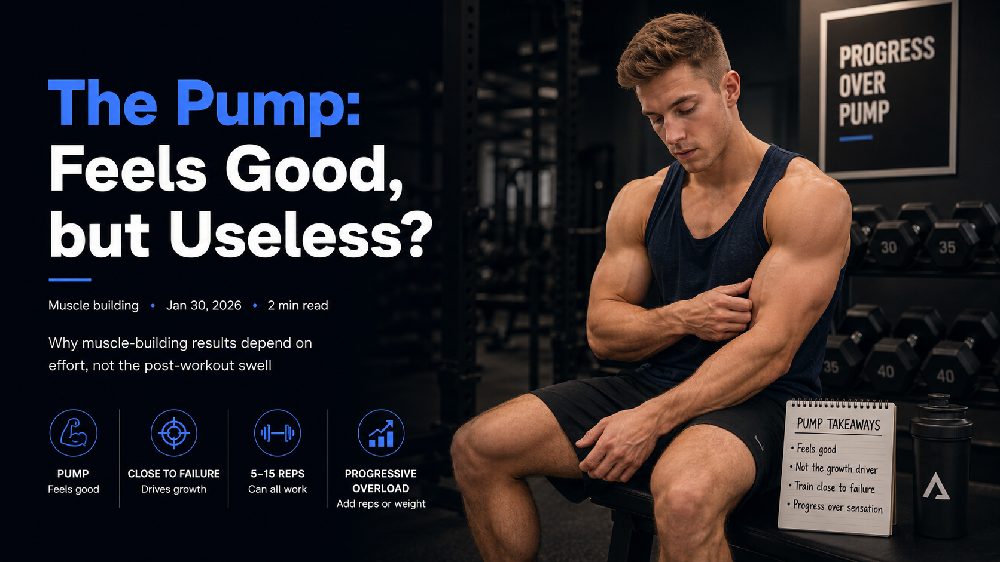
The Pump: Feels Good, but Useless?
Why muscle-building results depend on effort, not the post-workout swell
Few sensations are as celebrated in old-school bodybuilding as the pump—that short-lived rush where
blood floods the muscles and every curl or press makes them feel tighter and more alive. It is an enjoyable
payoff for hard work, but if your goal is to build muscle, the science says the pump itself is not the
driver of growth.
Recent research surveying a wide range of training styles—high reps, low reps, marathon sessions,
brutally heavy sets, and every tactic in between—landed on a single consistent finding: muscle grows
when you train close to failure with sufficient resistance. The 2024 study noted that whether you perform five reps or fifteen,
the key is finishing each set with only one or two reps left in the tank.
That intensity standard makes heavy, moderate-rep work uniquely efficient. A set of five with a weight that
forces you to stop at rep five because rep seven would be impossible is a high-quality muscle-building set.
Likewise, ten reps with just a couple left before failure will deliver the necessary stimulus. What does not
build much muscle is cruising through lighter weights without pushing to that effort zone, even if the pump
feels fantastic.
The study’s author emphasized that when the load is light, you must go all the way to failure to
make it count. Chasing the pump with endless light sets means flirting with exhaustion for 45 minutes just
to match the results you could get from heavier sets that stop a rep or two shy of failure. That strategy is
not only more fatiguing, it is rarely sustainable.
So why grind through high-rep burnout sessions if you can pick up a heavier load, hit five to ten challenging
reps, and walk away with the same (or better) stimulus? Understanding how muscle is built lets you work
smarter: keep most sets in a moderate rep range, aim to finish with one or two reps in reserve, add weight or
reps over time, and enjoy the pump as a pleasant side-effect rather than the goal.
In short, savor that fleeting swell if it motivates you, but chase progress by training hard with purposeful
loads. The pump is a bonus; proximity to failure is the progress signal.
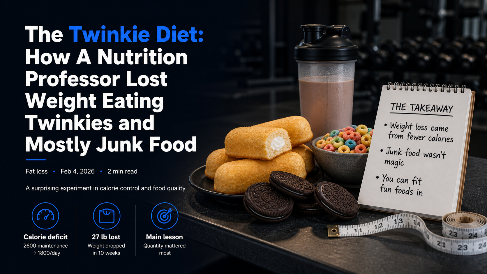
The Twinkie Diet: How A Nutrition Professor Lost Weight Eating Twinkies and Mostly Junk Food
A surprising experiment in calorie control and food quality
In a famous experiment, a nutrition professor decided to eat only Twinkies for 10 weeks to see what would happen to his body. The results were surprising and challenged many common beliefs about diet and weight loss.
This Kansas State Professor was Mark Haub, whose diet was mostly Twinkies, candy, cakes, oreos, sugary cereals, and then a few vegetables, a multivitamin and a protein shake.
The key to his success was not the Twinkies themselves, but the strict calorie control he maintained. By eating fewer calories than he burned, he was able to lose weight despite the poor nutritional quality of the food.
Mark figured out that his maintenance calories was 2600, which is the number of calories he could eat per day without losing or gaining weight. For the experiment, he brought that total down to 1800 calories per day.
The results? He lost 27 pounds, going from a body mass index almost on the edge of the obese score, all the way down to a normal weight! But that wasn't all. His biomarkers all got better as well. His cholesterol, blood pressure, body fat percentage, and other health markers related to heart health all improved significantly.
What do we make of this? You can eat mostly junk food and get healthier? I think the real takeaway is that when it comes to losing weight and being healthy, the amount of food you eat is more important than the quality. You can eat healthy foods all day long, but if you overeat, you will become overweight and your health will get worse.
I think this really shows us that we can have the foods we love, just in the right amounts. Cookies, cakes, and whatever else you love to eat is not off limits, it just must be in the right amount to be healthy.
The Effective Reps Theory
Not all reps are created equal. Which ones matter most?
How do you know how many reps you should be doing and whether they will help you make gains? The most simple answer is you need around 3-5 reps where your speed starts to really slow down because it is getting hard.
When you do a set of 10 reps for example with a weight where 10 is near failure, the first few reps you'll be able to do without much if any slowdown in speed. However, as you approach failure, you'll notice a significant slowdown in your ability to move the weight. This is where the effective reps come into play.
The effective reps are the ones that occur when you are close to failure, typically the last 2-5 reps of a set. These are the reps that create the most muscle damage and stimulate the most growth. So, if you want to maximize your gains, you need to focus on these effective reps. It doesn't mean going to failure, but close to it to make sure you get those effective reps.
What is going on here? Why does this matter? The reps you can do with no speed loss that are easy are not recruiting all the muscle fibers to grow. The ones that are hard and slow are where all the muscle fibers are being recruited.
Your body wants to minimize effort. It doesn't want to do more than it needs to do. So when you do bicep curls, those reps that slow down are really the only ones that matter for growth!
This now brings about a very interesting question. Does that mean the reps that are easy and fast are pointless? Largely yes, these reps are not contributing to muscle growth.
So, you should NOT be training with weights that are too light and doing too many reps. You're wasting your time and effort. You should be using heavier weights! You could start off your first rep already reaching this slower state, like a set of 5 that is difficult from the start.
So, if you want to maximize your gains, focus on the effective reps. These are the reps that matter most and will help you achieve your goals.
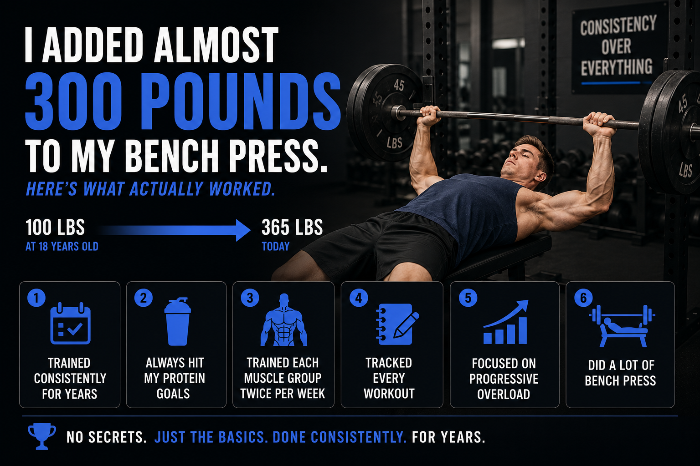
I Added Almost 300 Pounds to My Bench Press. Here’s What Actually Worked
Published March 22, 2026
When I first started lifting at 18, my max bench press was 100 pounds.
Today, I bench 365 pounds.
That’s an increase of 265 pounds.
It sounds extreme. It sounds like there must be some secret.
There isn’t.
What I’m about to tell you is probably less complicated than you expect—and that’s exactly why it works.
The Truth Most People Don’t Want to Hear
There was no secret program, no perfect supplement stack, and no magic exercise.
What got me here was doing a few simple things over and over again for years.
That’s it.
1. I Trained Consistently for Years
This is the most important factor—and the one people ignore.
Most lifters train hard for a few weeks, fall off, restart, and repeat. I didn’t.
I trained week after week, month after month, and year after year. No long layoffs. No constantly restarting.
Strength is a long-term adaptation. If you stay consistent, you will get stronger. If you don’t, nothing else matters.
2. I Always Hit My Protein Goals
I didn’t overcomplicate nutrition, but I did one thing right: I consistently ate enough protein.
That matters because muscle growth requires protein, recovery depends on it, and strength gains are limited without it.
You don’t need perfection—just consistency.
A simple target is around 0.7 to 1 gram of protein per pound of bodyweight.
3. I Trained Each Muscle Group Twice Per Week
My structure was simple: chest twice per week, triceps twice per week, shoulders twice per week, and back twice per week.
This frequency works because you stimulate growth more often, get more practice with the lift, and usually recover better than if you cram everything into one day.
Bench press isn’t just chest—it’s a full upper-body movement.
4. I Tracked Every Workout
I kept a notebook and logged everything: the weight used, the reps, and the sets.
That allowed me to focus on one thing: progressive overload.
That can mean more weight, more reps, or better performance over time.
If you’re not tracking, you’re guessing. And if you’re guessing, you’re probably not progressing.
5. I Focused on Progressive Overload Relentlessly
Every workout had a goal: beat what I did last time.
That might mean 5 more pounds, 1 more rep, or just better control with the same weight.
Small improvements compound massively over time. That is how 100 pounds turns into 365.
6. I Did a Lot of Bench Press
This might sound obvious, but most people don’t actually do it.
I averaged 10 to 15 bench press sets per week, spread across 2 workouts. That’s roughly 5 to 7 sets per session.
And I did that consistently for years.
No constant program hopping. No reinventing the wheel. Just bench, recover, and repeat.
Why This Works
People look for advanced techniques, optimal splits, and perfect programming.
But the truth is this: strength comes from doing the basics extremely well for a long time.
The formula is simple:
Train consistently
Eat enough protein
Track your lifts
Progress over time
Repeat for years
Why Most People Never Get Strong
It’s not because they don’t know what to do. It’s because they don’t stick with it long enough.
They program hop, skip workouts, don’t track, and quit before results show up.
Meanwhile, the people who get strong are usually just persistent.
Final Takeaway
Going from a 100-pound bench to 365 pounds isn’t about doing something extraordinary.
It’s about doing ordinary things extraordinarily consistently.
If you use the right amount of volume, the right frequency, and progressive overload for long enough, you will get stronger.
It’s not a mystery.
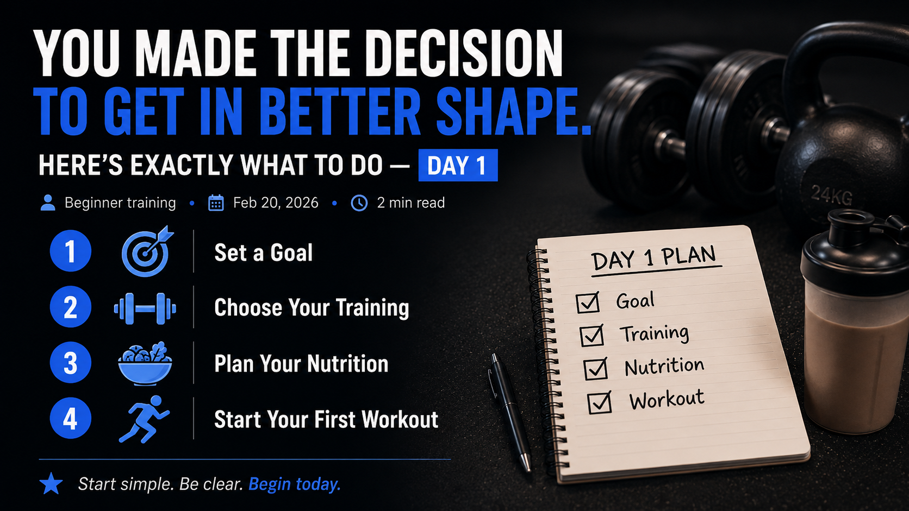
You made the decision to get in better shape. Here's EXACTLY what to do day 1.
Set a fitness goal
Decide how you will exercise to achieve this goal
Decide how you will eat to achieve this goal
Start your first workout
Set a fitness goal
Make clear exactly where you want to go. You can't get to the destination without a clear path. Do you want to lose 20 pounds? Do you want to build more muscle? Both? You can do both! The ability to change your health, body, strength, and life starts here. Be specific. The more specific you are, the more real it becomes. Don't be afraid to set a large goal. It is possible. A large goal will take time, but these things are acheived 1 pound of weight lost at a time. Or adding 1 pound of muscle at a time.
Decide how you will exercise to achieve this goal
Do you have an at home gym? Do you have need a gym membership? Are you able to run? Make sure you have the tools you need to achieve your goal. A gym membership is best if adding muscle is a part of your goal.
Decide how you will eat to achieve this goal
To lose weight, you MUST burn more calories than you consume. It's the only way to lose weight. Do you have some high protein meals and protein powder? Do you have some healthy foods you enjoy eating? Your favorite foods that you eat for enjoyment, are you okay with having them in smaller amounts? If you get these situated, you will lose fat.
Start your first workout
Now that you have your goal, your plan, and your tools, it's time to start. You can do this! You are capable of achieving your goal. The first workout is the hardest, but it gets easier from here. If you need help, I am here for you. I can help you get started and stay on track.
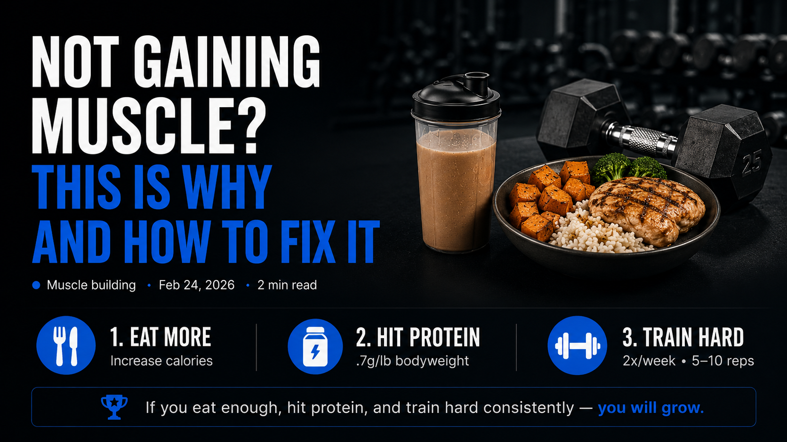
Not Gaining Muscle? This is Why and How to Fix It
Gaining muscle is tough, but it’s a pretty simple formula: if you train, rest, and give yourself the proper nutrition, you grow. It’s simple. And it works for everyone. Something in here is off if you’re not getting results.
Not Eating Enough
Every skinny person I’ve met swears up and down they eat so much, that their metabolism is the problem, or that there is some special reason they just can’t gain weight and I am here to tell you if this sounds like you, I regret to inform you that this is all nonsense. Maybe you do burn more calories that most people, but the solution is still the same: you MUST eat more.
How to do this? The easiest way to eat more is to make a big protein shake. Add some type of milk, protein powder, peanut butter, ice, a banana, and some other fruit and blend together. Why do I recommend this? Consuming liquid calories is so easy. It doesn’t fill you up the same way solid food does, so it gives you a very simple way to consume more calories in the easiest path possible.
If you already do this, the other practical advice is to eating 10% more food for breakfast, lunch, and dinner. Just increase your portion sizes. If you follow through with these two things, I’d bet this solves all your issues with adding muscle.
Protein
Are you consuming around .7g per pound of bodyweight? So if you’re 100lb, you should get 70g of protein. If you’re 150lb, you should get 105g. If you’re 200lb, you should be getting around 140g. Make sure you’re somewhere in this range, as this has been shown to be the level of protein consumption that maximizes muscle mass.
Incorrect training
If you’re training each muscle group only once per week, you’re not maximizing your ability to put on muscle. We have a lot of research today that maximum muscle growth is achieved by training a body part twice per week. So make sure you’re doing 3-5 sets of each muscle group that you want to grow twice per week
The other part of your training that could be off is the intensity. Are the majority of your sets challenging? Or are they too easy? You should have most sets be a couple reps within failure in a 5-10 rep range for pretty much every exercise. And each week, try to add a rep or add some weight whenever you can.
If you increase your food intake, make sure you’re getting enough protein, and you’re hitting each muscle group twice per week with enough sets and pretty close to failure, you WILL grow! Be patient and stick to this plan, and the results must come in time.
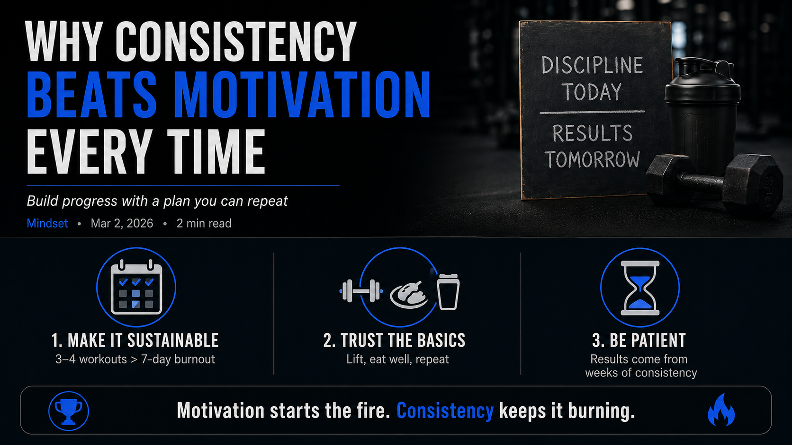
Why Consistency Beats Motivation Every Time
Build lasting progress by following a plan you can repeat
New Year’s is around the corner as I write this, and the change of the calendar always feels like a clean slate. It is a chance to chase the goals you have been putting off, so I am all for New Year’s resolutions.
The problem is that early surge of motivation rarely sticks around. Gyms are full in January and half-empty by March because most people rush in without a plan. Going from zero to seven workouts a week with a rigid diet is overwhelming, painful, and nearly impossible to sustain. When the plan is unsustainable, the motivation fades.
The fix is not more hype—it is a smarter approach. Remember that your fitness journey is thousands of steps long, and day one is only a single step. Follow a proven process, trust that it works, and give it time. You are human just like everyone else who has succeeded before you, so the same principles apply.
Physics, biology, and the laws of thermodynamics do not play favorites. If you lift with good form, eat enough protein, and stay in a calorie deficit when fat loss is the goal, your body has to adapt. Two plus two equals four, and consistent effort with a solid plan produces results.
Instead of sprinting into a seven-day workout marathon, pick three or four focused training sessions per week. Choose the exercises that matter most for your goal, and fuel yourself with one or two genuinely nutritious meals each day. Cut out sugary drinks, keep your favorite snacks, and simply enjoy them in smaller portions.
Give yourself patience and grace. If your goal is to lose 25 pounds, commit to doing it over six months. The time will pass whether you stay the course or quit, so you might as well stick with the plan that guarantees progress.
Motivation can light the spark, but a sustainable routine keeps the fire burning. Build a plan you can execute even on low-energy days, and the consistency you stack will carry you to your goals.
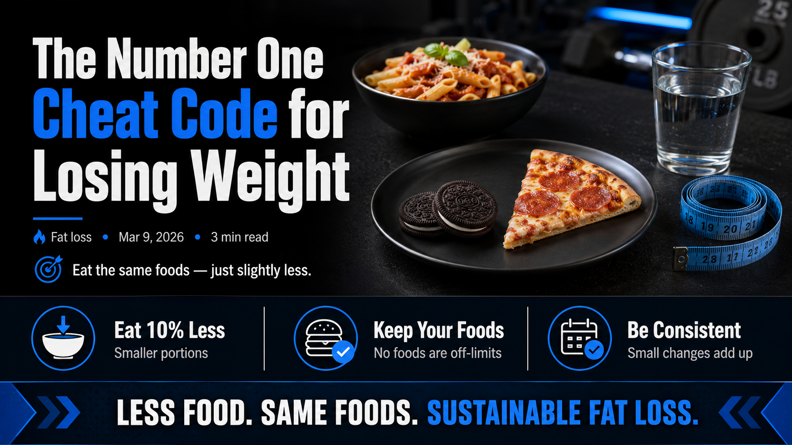
The Number One Cheat Code for Losing Weight
If scientists had to write a book about how to lose weight, it would probably be one sentence long:
Burn more calories than you consume.
That’s it.
Every diet — keto, intermittent fasting, low-carb, paleo, vegan — ultimately works (when it works) because it helps people do one thing:
Eat fewer calories than they burn.
But most people approach weight loss in the hardest way possible.
They try to completely overhaul their diet.
They eliminate their favorite foods.
They attempt extreme diet plans that are impossible to maintain.
There’s a much easier strategy.
The Cheat Code: Just Eat Slightly Less of What You Already Eat
Instead of changing what you eat, simply reduce how much you eat.
That’s the cheat code.
You can keep eating the same foods you already enjoy — just in slightly smaller amounts.
Examples:
If you normally eat 6 Oreos at night, eat 3 instead
If you normally make a large bowl of pasta, make a slightly smaller one
If you normally eat two slices of pizza, eat one and a half
No complicated rules.
No forbidden foods.
Just smaller portions.
And over time, this works incredibly well.
A Simple Example
Let’s say someone maintains their body weight eating 2,500 calories per day.
If they reduce their intake by 10%
2,500 calories → 2,250 calories per day
That’s a deficit of 250 calories per day.
Over a full year:
250 × 365 = 91,250 calories
Since about 3,500 calories equals roughly one pound of body fat, that would theoretically result in:
≈ 26 pounds lost over a year
And remember — the only thing they did was eat 10% less food.
No crazy diet.
No major lifestyle overhaul.
Just slightly smaller portions.
If they reduce intake by 20%
2,500 calories → 2,000 calories per day
That’s a deficit of 500 calories per day.
Over a year:
500 × 365 = 182,500 calories
Which equals roughly:
≈ 52 pounds lost over a year
Now, in the real world weight loss slows as your metabolism adjusts and body weight decreases, but the math shows the power of small daily changes.
Why This Strategy Works So Well
The biggest reason diets fail is adherence.
People pick diet plans that are simply too restrictive.
They eliminate foods they love.
They make dramatic lifestyle changes that feel miserable to maintain.
Eventually, they burn out and return to their old habits.
But reducing portion sizes avoids this problem.
You still eat the same foods.
You still enjoy meals.
You just consume slightly fewer calories.
This makes the strategy far easier to maintain for months — or even years.
And consistency is what ultimately leads to fat loss.
The Psychology Advantage
There’s also a psychological benefit to this approach.
When people believe they must follow a strict diet, they often fall into an all-or-nothing mindset.
If they slip up once, they feel like they’ve failed and abandon the plan entirely.
But when the goal is simply eat a little less, there’s no sense of failure.
You’re not “breaking the rules.”
You’re just adjusting portion sizes.
And that makes it much easier to stay on track long term.
The Real Secret to Losing Weight
There is no magic food.
There is no perfect diet.
The real secret is simply this:
Eat fewer calories than you burn, consistently over time.
The easiest way for most people to do that is not by changing everything they eat.
It’s by doing something much simpler.
Eat the same foods you already enjoy — just slightly less of them.
That’s the cheat code.
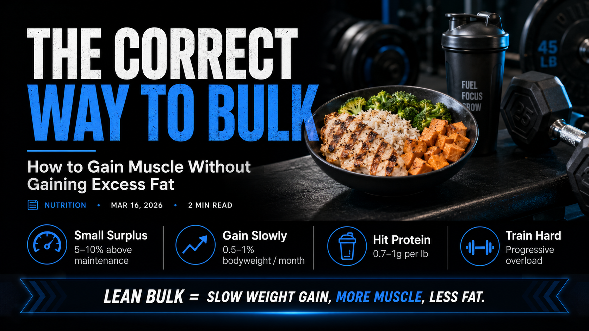
The Correct Way to Bulk: How to Gain Muscle Without Gaining Excess Fat
If your goal is to gain muscle, you have probably heard classic advice: just eat more. A calorie surplus does matter, but the size of that surplus matters even more. Eating far above your needs does not magically accelerate muscle growth. Most of the extra weight gained from aggressive bulks is body fat, not extra muscle.
The smartest way to bulk is to gain weight slowly and intentionally so that more of the scale increase is lean mass.
Why Bulking Too Hard Backfires
Muscle growth is a slow biological process. Your body can only build new muscle tissue at a limited rate, no matter how high your calories go.
Larger surpluses increase total weight gained.
Faster weight gain tends to increase fat gain more than muscle gain.
Overfeeding studies repeatedly show that pushing calories too hard shifts weight gain toward fat mass.
In short: your body has a speed limit for muscle growth. Extra calories above that limit are mostly stored as fat.
The Ideal Rate of Weight Gain for a Lean Bulk
Most evidence-based hypertrophy recommendations for trained lifters suggest a slow gain phase:
0.25-0.5% of body weight per week
0.5-1% of body weight per month
Example monthly targets:
Body Weight
Ideal Monthly Gain
150 lbs
~0.75-1.5 lbs
180 lbs
~0.9-1.8 lbs
200 lbs
~1-2 lbs
A slower bulk usually builds nearly the same muscle as a fast bulk, but with much less fat to diet off later.
How Big Should Your Calorie Surplus Be?
A strong starting point is a 5-10% calorie surplus above maintenance.
Maintenance Calories
Lean Bulk Calories
2500
2625-2750
3000
3150-3300
If scale weight does not move after 2-3 weeks, increase calories slightly and reassess.
Macros for Muscle Gain
Protein: 25-30% of calories
Carbohydrates: 55-60% of calories
Fat: 15-20% of calories
Protein remains the key target: aim for roughly 0.7-1g per pound of body weight per day.
Start Your Bulk Lean
Starting body composition matters. Many lifters do better beginning a bulk around 10-15% body fat, because nutrient partitioning is usually more favorable and you can stay in surplus longer before feeling too soft.
The Lean Bulk Strategy (Simple Version)
Eat in a small surplus (about 5-10%).
Target slow gain (0.5-1% body weight per month).
Progressively overload in the gym.
Hit protein daily (0.7-1g/lb).
Adjust calories based on weekly trend weight.
Lean Bulk Calculator
Use this quick tool to estimate your lean-bulk calories and target monthly gain range.
Expected Monthly Muscle Gain by Training Age
This chart gives realistic expectations so you can stay patient and avoid dirty-bulk mistakes.
Lifter Level
Expected Muscle Gain / Month
Example at 180 lbs
Beginner (0-1 year)
~0.75-1.5% body weight
~1.35-2.7 lbs
Intermediate (1-3 years)
~0.4-0.8% body weight
~0.72-1.44 lbs
Advanced (3+ years)
~0.2-0.4% body weight
~0.36-0.72 lbs
The Takeaway
Bulking is not about eating everything in sight. It is about giving your body enough extra energy to build muscle, without overshooting into unnecessary fat gain.
The lifters who build the best physiques over time are not the ones who bulk the hardest. They are the ones who bulk the smartest.
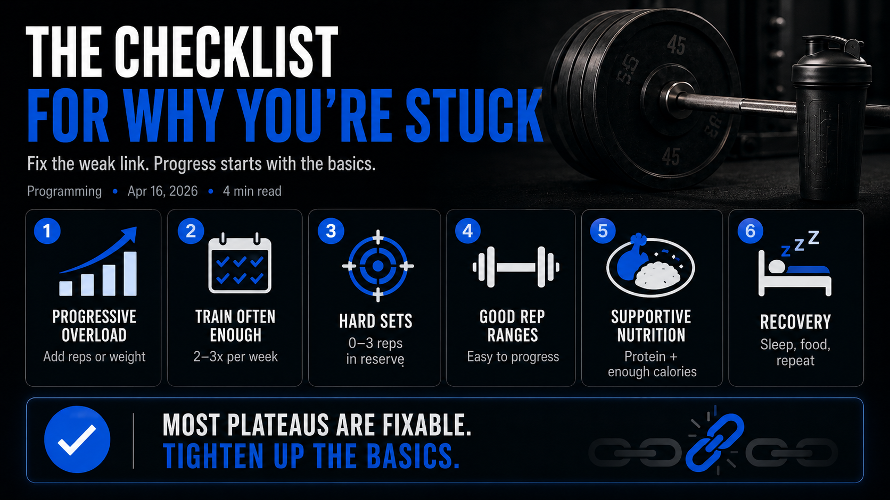
The Checklist for Why You’re Stuck
If you feel like you’ve been working hard in the gym but your body, strength, or lifts are not changing much, there is usually a reason.
Most people who are stuck are not broken. They are usually just missing one or two big things.
Before you assume your genetics are terrible, your program is cursed, or you need some advanced method, run through this checklist.
1. Are you progressively overloading?
This is the first thing I would look at.
Are you actually giving your body a reason to improve?
That means over time, you should be trying to:
Add a rep
Add a little weight
Improve your technique with the same weight
Make the same weight feel easier
If week after week your workouts look exactly the same, your body has very little reason to adapt.
You do not need to set a personal record every workout. But there should be some kind of ongoing effort to move forward over time. Even adding one rep here or five pounds there matters.
If there is no plan to progress, that is a huge red flag.
2. Are you training each muscle group often enough?
A lot of people simply do not train each muscle group enough.
In most cases, training a muscle around 2 to 3 times per week works really well for building size and strength. If you only hit a muscle once per week, you can still make progress, but for many people it is slower and less reliable.
For most muscle groups, a good starting point is about 6 to 10 hard working sets per week, then adjusting based on recovery and progress.
That is enough for many people to grow without turning training into junk volume.
If you are not doing enough volume, progress can stall.
If you are doing way too much volume, that can also stall progress.
More is not always better. Better is better.
3. Are your sets actually hard enough?
A lot of people say they train hard, but they are not getting close enough to failure for the sets to really count.
You do not need to take every set to absolute failure, but most of your working sets should be close.
If you finish a set and could have done 5 more reps, that probably was not a very stimulative set.
A good rule is that many of your hard sets should end with maybe 0 to 3 reps left in the tank.
That is usually where the growth-producing reps live.
4. Are you using rep ranges that are easy to progress?
This is a big one that people do not think about enough.
Some rep ranges are just easier to progress than others.
For example, on a lift like the bench press, a lot of your training will usually work very well in roughly the 70% to 85% range of your one-rep max.
That often means sets like:
5 sets of 5
4 sets of 6
3 to 5 sets of 4 to 8
Why does this matter?
Because it is easier to build progress there.
It is much easier to add five pounds to a lift when you are doing something like 5x5 than when you are doing 5x10. High-rep work has a place, but if too much of your training lives in rep ranges that are hard to load progressively, strength progress can get messy.
If your whole program is built around fatigue instead of measurable progression, that could be part of why you are stuck.
5. Are you eating in a way that supports muscle growth?
Training is only part of the equation.
If your diet is poor, your results will usually reflect it.
Ask yourself:
Are you eating enough protein?
Are you getting enough calories to recover?
Are you in a deep calorie deficit?
Are you consistently under-eating without realizing it?
Are you getting the nutrients your body needs?
Protein matters because it helps maximize muscle protein synthesis and recovery.
Calories matter because if you are in too aggressive of a deficit, your body is not in a great position to build muscle or push strength upward.
A lot of people want to build muscle while eating like they are dieting for a photo shoot. That usually does not work very well.
6. Are you recovering well enough to repeat good performances?
You do not build muscle while lifting. You build it by recovering from lifting.
If your sleep is bad, your stress is high, your food is inconsistent, and your body is always run down, your workouts will suffer.
You do not need a perfect recovery routine, but you do need enough recovery to come back and perform well again.
If your performance is constantly flat or declining, recovery should be part of the checklist.
The truth about being stuck
Most plateaus are not mysterious.
Usually it comes down to one of a few things:
No progressive overload
Bad training frequency
Too little or too much volume
Not training hard enough
Poor exercise loading or rep selection
Poor diet
Poor recovery
That is good news, because it means the answer is usually fixable.
You probably do not need a brand new identity, a secret supplement, or some magical advanced program.
You just need to tighten up the basics.
Run this checklist honestly
If you are stuck, ask yourself:
Am I progressively overloading?
Am I training each muscle group 2 to 3 times per week?
Am I doing about 6 to 10 hard working sets?
Am I training close enough to failure?
Am I using rep ranges and percentages that are easy to progress?
Am I eating enough protein and enough total food?
Am I recovering well enough to perform again?
If you answer those honestly, the problem usually reveals itself pretty quickly.
And once you find the weak link, progress starts making sense again.